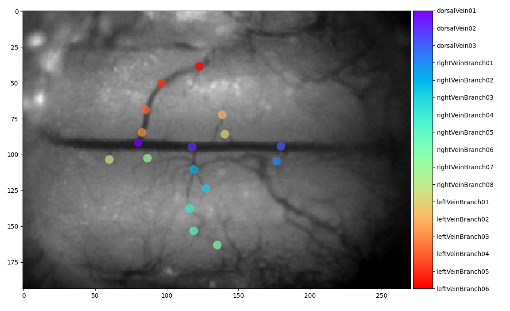
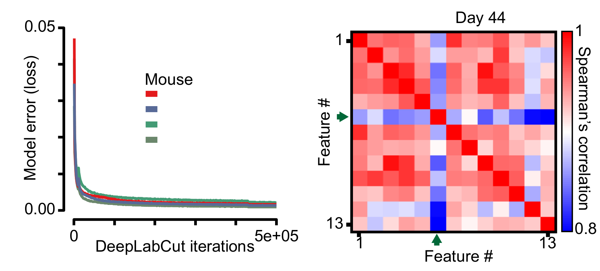
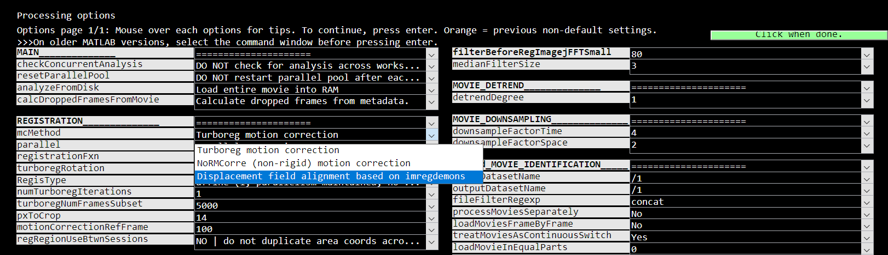
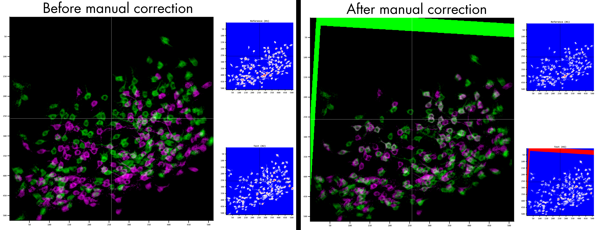
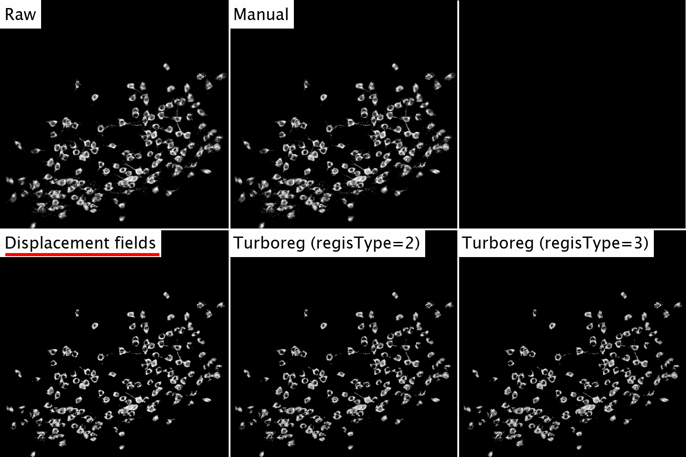
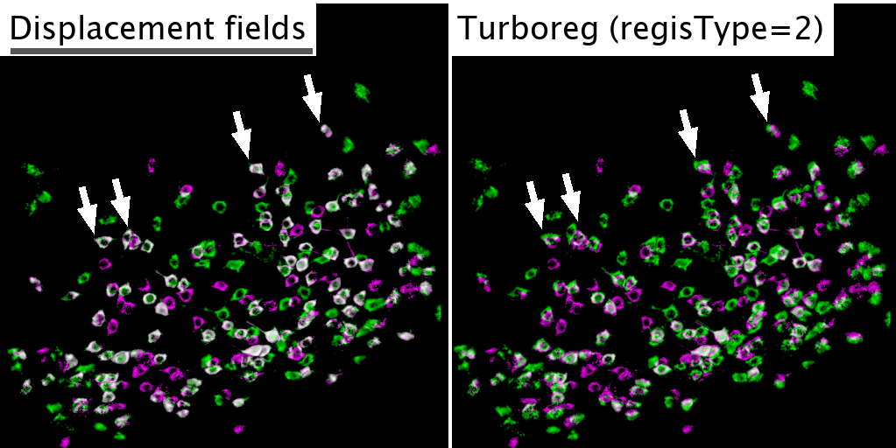

Motion correction of the spinal cord in awake, behaving animals¶
Awake state spinal cord recordings have significant challenges compared to recordings in the brain: locomotion-related spinal cord movement results in rapid, large rostro-caudal shifts (>400 μm in certain animals within and across sessions), non-rigid deformations of the field of view can occur, and the presence of obstacles—such as neovascularization, bubbles, etc.—that cover part of the field of view and move differently from the primary tissue of interest (see diagram above).
To address these, we developed and validated a multi-step, hierarchical workflow that allows users to determine which algorithm is best suited to handle their imaging data (see a above). The pipeline consists of a large-displacement motion correction method (LD-MCM), an inclusion of an existing non-rigid motion correction method within the CIAtah pre-processing pipeline, and a semi- or fully-automated cross-session motion correction method (CS-MCM). We briefly discuss each technique below and how to run them within CIAtah. See our preprint for detailed methods:
- Ahanonu, Crowther, et al. (2023). Long-term optical imaging of the spinal cord in awake, behaving animals. bioRxiv.
- https://www.biorxiv.org/content/10.1101/2023.05.22.541477v1.full
LD-MCM (large-displacement motion correction method)¶
To automate the correction of large rostrocaudal shifts, LD-MCM uses deep learning (e.g. DeepLabCut [DLC]) to track features followed by control point and rigid registration (see above figure). Although image alignment can be done using feature detectors—such as MSER, FAST, SIFT, and others—spinal cord imaging movies contain a variety of features across multiple focal planes. As a result, these methods can identify non-relevant features. Here, we tracked consistent vasculature, as a proxy for spinal cord motion, which improved registration. To achieve this, we used deep learning methods in which features are manually annotated on a subset of frames and a model is trained to identify them in novel video frames.
LD-MCM: feature selection¶
Below is an example frame from a spinal cord imaging animal (expressing the calcium indicator GCaMP6s) with vascular features selected along both the dorsal vein and dorsal ascending venules (dAVs). We found that selecting at least 7-10 features enables robust motion correction and can increase the likelihood that when tracking features on new sessions there will be adequate features available for registration.

We used several criteria to select features for LD-MCM. Animals with prominent dorsal veins and dorsal ascending venules (dAV) made possible the most robust motion correction owing to the existence of distinct, stable landmarks. We then selected features based on a series of criteria:
- The feature is stable within individual and across most of the imaging sessions of an animal as determined visually (by rapid scrolling through the field of view).
- The feature is “distinct”, e.g. a blood vessel with a branch is easier to consistently annotate the correct position compared to an unbranched vessel.
- See in the above image where annotations along the dorsal vein are at points at which there is branching. The dorsal vein is a good feature to select as it is unlikely to become so small, e.g. due to vasoconstriction, as to disappear within or across imaging sessions.
- The feature's motion is concordant with the motion of the biological features of interest, e.g. spinal cord vasculature motion matches those of dorsal horn neurons or microglia of interest.
- Note that features that disappear from the FOV can still be annotated, but depending on the motion correction transformation type used, we discard them from specific frames and only use commonly found, high-confidence features between the reference and the to-be-corrected frames.
LD-MCM: installing deep learning methods¶
A variety of deep learning method are available. Currently LD-MCM uses DeepLabCut with support for additional methods in the future.
DeepLabCut¶
Feature tracking can be performed in python using DeepLabCut (support for other deep learning methods forthcoming). Information on installation and usage of DeepLabCut can be found on their GitHub repository and associated web pages.
- https://github.com/DeepLabCut/DeepLabCut
- https://deeplabcut.github.io/DeepLabCut/docs/installation.html#conda-the-installation-process-is-as-easy-as-this-figure
We recommend running within Anaconda (https://www.anaconda.com/) as the ability to use environments and the access to the ecosystem makes transitioning to DeepLabCut live and other tools easier in the future. Clone the repository and run the following commands:
# Change directory to DeepLabCut Github
cd PATH_TO_DEEPLABCUT_GITHUB_REPO
cd conda-environments
# Windows/Linux/MacBook Intel chip
conda env create -f DEEPLABCUT.yaml
# Apple M1 / M2 chips
conda env create -f DEEPLABCUT_M1.yaml
# Activate the DeepLabCut environment
conda activate DEEPLABCUT
# Change directory back to DeepLabCut
cd ..
# Run DeepLabCut GUI
python -m deeplabcut
Using a GPU can drastically improve speed of training models and analyzing data, see the below preprint characterizing DeepLabCut performance in different scenarios:
- On the inference speed and video-compression robustness of DeepLabCut
We recommend checking CPU and GPU usage during initial runs to ensure that the GPU is being used, e.g. on Windows see https://michaelceber.medium.com/gpu-monitoring-on-windows-10-for-machine-learning-cuda-41088de86d65. At times the default DeepLabCut installation will not lead to GPU support to be enabled/used by default due to incomplete installation of CUDA libraries and TensorFlow. Check the below URLs for addressing these issues:
- https://deeplabcut.github.io/DeepLabCut/docs/installation.html#gpu-support
- https://developer.nvidia.com/cuda-downloads
- https://www.tensorflow.org/install/pip
We recommend running the below commands in the terminal to make sure CUDA toolkit and cuDNN are installed correctly in the environment. We found this worked on Windows 10 on with DeepLabCut version 2.3.9 (https://github.com/DeepLabCut/DeepLabCut/tree/82f47b3233aecc962cb262f29ea2235f3523a4f1).
# Install cuDNN runtime libraries
pip install nvidia-cudnn-cu11
# Install CUDA Deep Neural Network and CUDA toolkit
conda install -y -c conda-forge cudnn cudatoolkit=11.8.0
If the installation works well, running the below command from the command line.
python -c "import tensorflow as tf; print(tf.config.list_physical_devices('GPU'))"
This should produce a result similar to that below GPU-related items and TensorFlow are properly installed:
[PhysicalDevice(name='/physical_device:GPU:0', device_type='GPU')]
An error might occur (e.g. on Windows) in which zlibwapi.dll is not found. If that is the case, follow the instructions at the below URL to download zlibwapi.dll and place it within the CUDA bin directory so it can be found.
LD-MCM: deep-learning feature identification¶
Annotate at least 20 frames; more frames are preferred to improve the model's performance. Using the automated selection of frames can work, but we also recommend selecting several frames manually during times when you have the maximum rostral and caudal extent of movement to ensure consistent annotation across all types of motion present. We recommend starting with the following parameters:
- 500,000 iterations (see below)
- The number of iterations can in part be determined by the time at which reductions in model error asymptote, see below image (left panel).
net_type:resnet50orresnet101(start with resnet50)dataset_type(dataset augmentation):imgaugglobal_scale:0.8batch_size(inpose_cfg.yaml): 1 or 4- Fully connected parts.
- We initially performed analysis using DeepLabCut version
2.2.3.

After running, check the model training and test errors to ensure that the model is accurate. We will often then scroll through the movie annotated with the tracking to identify frames where the tracking is sub-optimal then retrain the model including those frames in the labeled dataset. One can import the x, y tracking and calculate the correlation of the movement with all other features then exclude those that are not concordant (see above image, right panel). However, this should only be done if using rigid control point registration and that area of the FOV does not actually move differently.
LD-MCM: control point registration of features and rigid alignment¶
Once features have been successfully tracked, we use control point registration to perform the initial alignment followed by rigid registration for the final motion correction. For example code to run these steps, see the demo script in ciapkg.demo.ldmcm.m that can be accessed with CIAtah loaded by running the below in the MATLAB command line:
edit ciapkg.demo.ldmcm
The LD-MCM function can be called directly as below, assuming dlcTensor is a tensor containing DLC data loaded with ciapkg.behavior.importDeepLabCutData.
inputMovie = ciapkg.motion_correction.ldmcm(inputMovie,dlcTensor,...
'cropCoordsInSession',cropCoordsInSession,... % Crop for rigid registration.
'maxDist',50,... % Max distance in pixels to allow for control point registration.
'refFrame',refFrameNo,... % Frame to use as reference.
'rotateImg',0,... % Whether to rotate the image.
'dsSpace',1,... % If the inputMovie is X times larger than coordinates in dlcTensor
'runPostReg',1,... % Run rigid registration after control point registration.
'inputMovie2',inputMovieNorm,... % Input a normalized movie, else input an empty vector.
'dimToFix',[]);
Diffeomorphic transformations to handle non-rigid spinal cord motion¶
To handle non-rigid motion, we adapted displacement field-based registration based on Maxwell’s Demons (Thirion 1998; Vercauteren et al. 2009) into CIAtah. These techniques can lead to registration of images containing a mix of deformations and spatial shifts of features in the imaging field of view (Fig. 2g-h) and have been used previously for cross-session and other motion correction in brain Ca2+ imaging.
Diffeomorphic transformations are directly integrated into CIAtah's modelPreprocessMovie module that is used for existing preprocessing workflows. Under the preprocessing option mcMethod you can select imregdemons. We recommend first running this motion correction on a subset of imaging planes, as even with parallel processing this algorithm can take significantly longer than using TurboReg or similar methods.

Displacement field motion correction can be directly called using the below CIAtah function:
[inputMovie,ResultsOutOriginal] = ciapkg.motion_correction.turboregMovie(inputMovie,...
'mcMethod','imregdemons',...
'refFrame',1,...
'df_AccumulatedFieldSmoothing',0.54,...
'df_Niter',[500 400 200],...
'df_PyramidLevels',3,...
'df_DisplayWaitbar',false);
Displacement fields demo¶
To run an example of the displacement fields and see that it works on your system, run the below. It uses data in data\displacementFields to conduct motion correction.
ciapkg.demo.displacementFields;
edit ciapkg.demo.displacementFields to open the script and see how the displacement fields' function is called and run if users desire to adapt that code into their own scripts outside the CIAtah GUI (or see above).
Reference dot image
Demonstrates accurate motion correction when only a single reference object is warped along a single dimension.
Spinal cord imaging data
This image shows two frames from a spinal cord imaging movie where there is more motion in certain areas and not others. Notice the bottom left dorsal ascending venule, where the branch closest to the dorsal vein has movement but more lateral parts of the venule do not. This is properly corrected.
Smiley face
Demonstrates accurate motion correction when multiple objects are warped and shifted in multiple independent directions and magnitudes.
Cross-session alignment of cell extraction outputs¶
Use of displacement fields for motion correction of cell extraction outputs (see Cross session cell alignment page) improves results substantially, especially in cases where there is tissue warping across days.
Often times there is significant displacement session-to-session that needs to be corrected. This can be done automatically using rigid motion correction (with translation and rotation enabled) or if issues are encountered, within computeMatchObjBtwnTrials options users can enable the manual motion correction GUI, that will display a reference (purple) and test (green) session in a GUI that allows users to rotate and translate the images until they are aligned on features users consider relevant. See below for an example.

See below for an example GIF switching back and forth between two imaging sessions from a two-photon microscopy dataset. It also demonstrates the difference in performance between manual, displacement fields, TurboReg (affine, rotation, no skew), and TurboReg (projective, rotation, no skew). Displacement fields shows a significant improvement.

The below image is displacement fields vs. TurboReg (affine, rotation, no skew) with session #1 (purple), session #2 (green), and overlap (white). The white arrows indicate example cells that have greatly improved alignment with displacement fields.

Cross-session motion correction (CS-MCM)¶
To compare expression across imaging sessions of spinal cord axons (Thy1-GFP mice), dorsal horn neurons and primary sensory axons (AAV-mediated GFP and tdTomato expression), and microglia (CX3CR1-EGFP mice), we developed a multi-step motion correction protocol. This protocol involved manual correction for large shifts, rotations, and other FOV changes (e.g. horizontal or vertical mirroring) followed by multiple rounds of rigid registration, which led to significantly improved alignment (above figure, right panel). After running this procedure, we also employed a modified LD-MCM protocol to track individual features, including vasculature and axons, across months to over a year (see below video).
The demo for cross-session motion correction can be viewed below. We recommend the folders containing each session's data include day in the name, e.g. _day01 and _day04 for days 1 and 4, respectively.
edit ciapkg.demo.cross_session_motion_correction
The resulting MAT or TIFF file that is saved out can be used for downstream cross-session analysis.